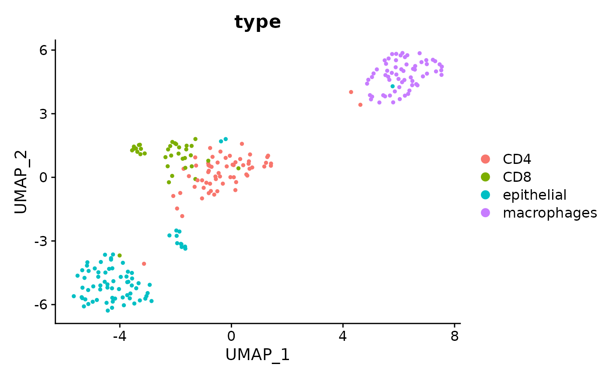
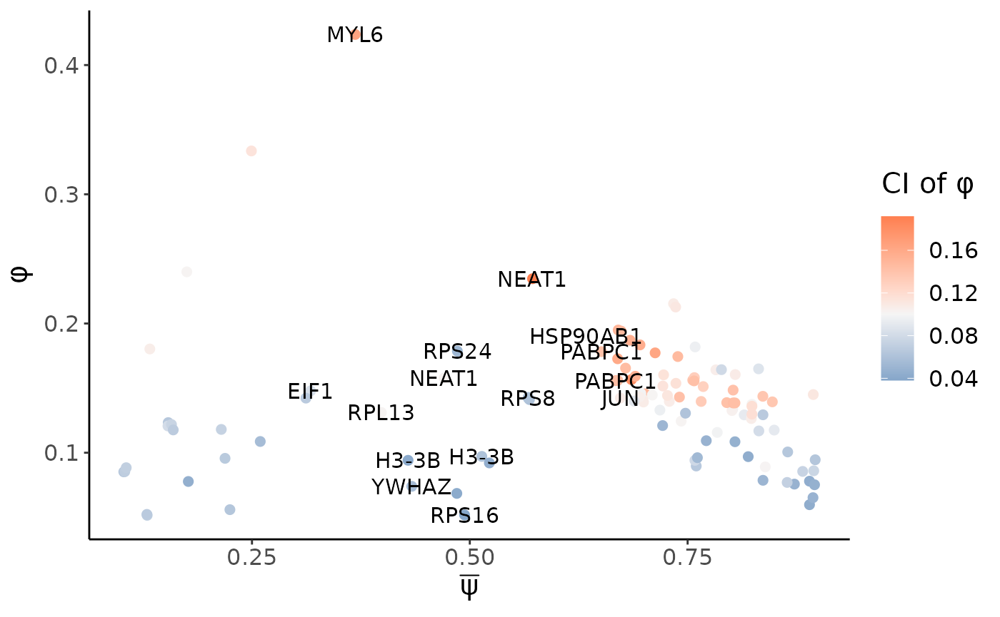
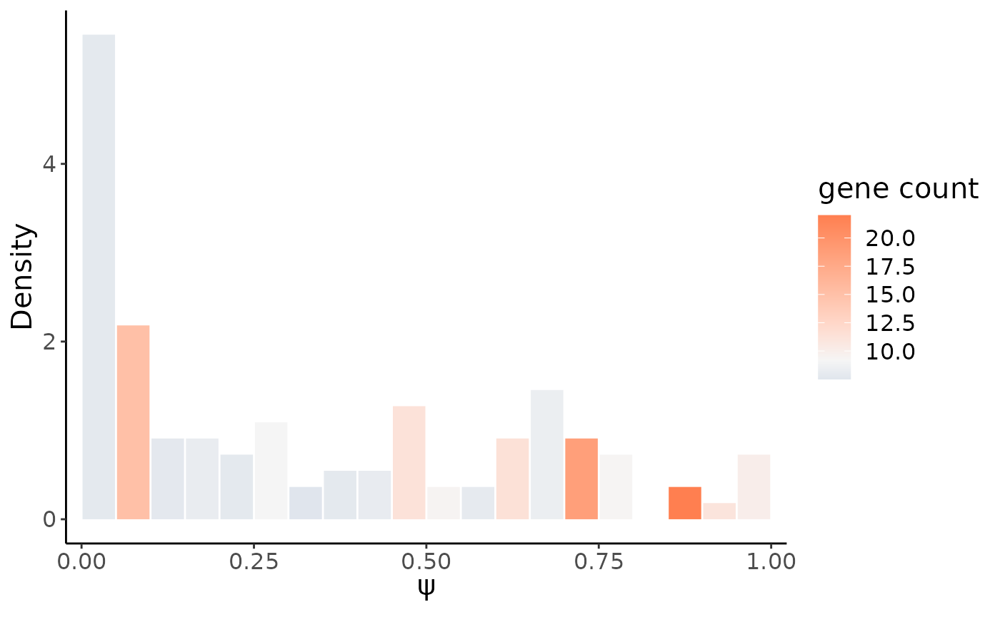
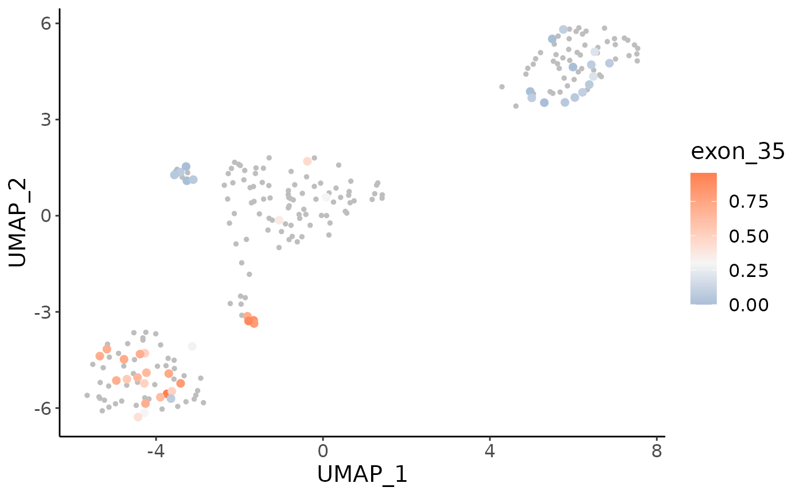
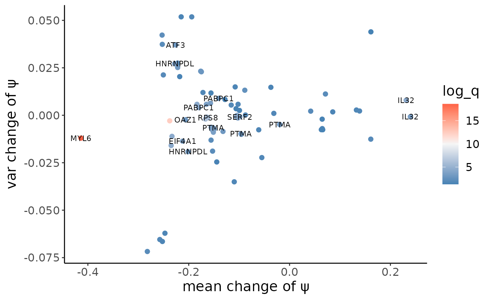
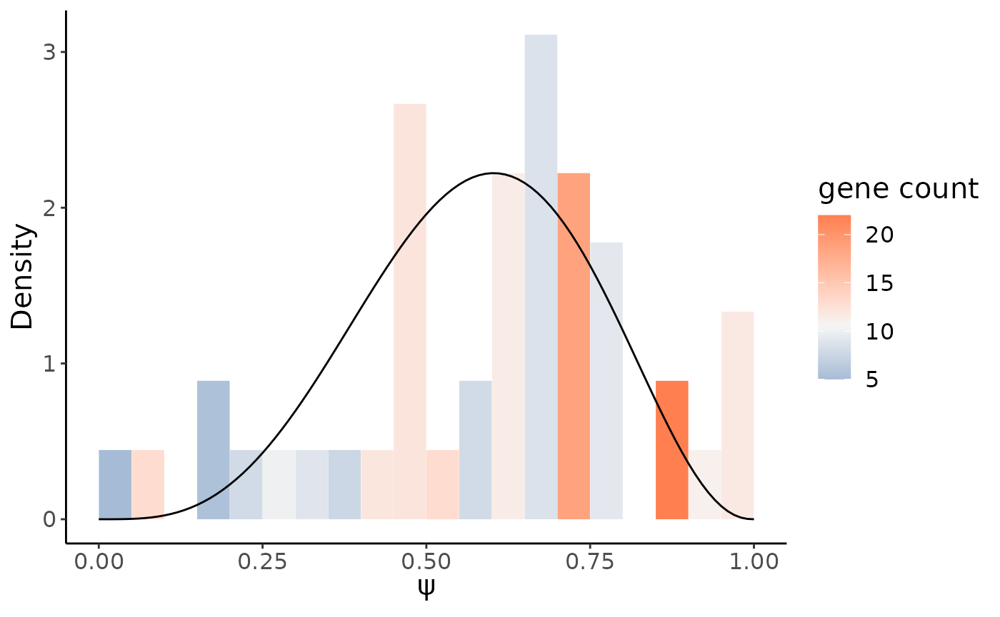
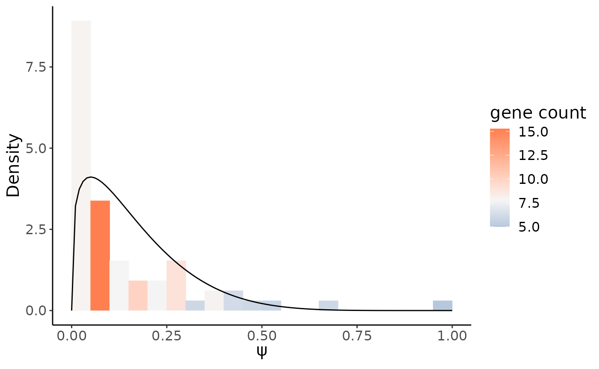
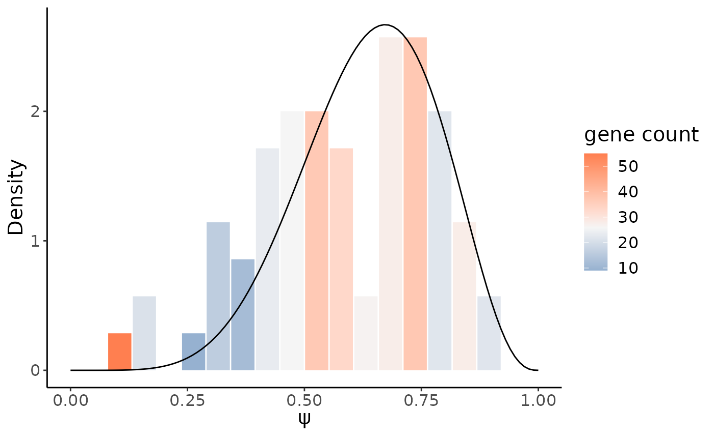
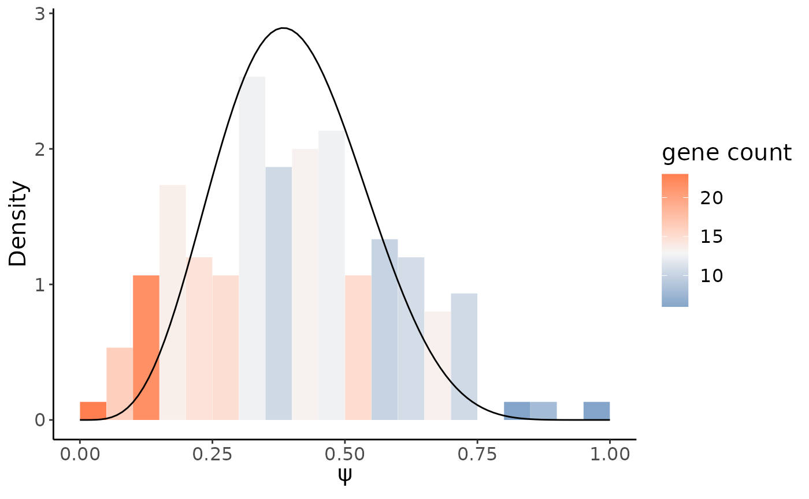

tutorial
getStart.RmdOverview
This tutorial demonstrates how to use Longcell to analyze single cell isoform count data. Due to the frequent truncations in Nanopore long reads sequencing and to allow for identification of new ioforms, Longcell stores the isoform information as sequence of exons. So instead of building a cell-by-isoform matrix, the information of gene expression and isoform expression are stored seperately.
The general steps for the analysis are:
regular scRNA-seq gene expression analysis.
identify highly variable exons
differetial alternative splicing analysis between cell groups
We add interface to Seurat, thus you can do both general scRNA-seq gene expression analysis and alternative splicing analysis within a Seurat object.
First, we load Longcell and the other packages necessary for this vignette.
data
Here we are using the sample of colorecatal metastasis to liver published in our paper as an example. The single cell isoform quantification for this sample has been generated by Longcell-pre.
We can directly generate a Seurat object from the output of Longcell-pre.The Splice object is embedded in the misc slot of the Seurat object, which stores the single cell isoform count. You can get access to it via getSplice(object)
crc = createSpliceSeurat(path = "../tests/data/",project = "colorectal",min.cells = 3,min.features = 200)
getSplice(crc)
#> Splice object with 239 cells and 14733 genesWe could check the isoform count for each gene in each cell via getIsoform(object,gene), for example:
crc_MYL6_iso = getIsoform(crc,"MYL6")
head(crc_MYL6_iso)
#> cell gene start
#> 2729 AAACGGGGTTATGTGC MYL6 56158371
#> 2730 AAACGGGGTTATGTGC MYL6 56158371
#> 2731 AAACGGGGTTATGTGC MYL6 56160017
#> 2732 AAACGGGGTTATGTGC MYL6 56160017
#> 2733 AAACGGGGTTATGTGC MYL6 56158359
#> 2734 AAACGGGGTTATGTGC MYL6 56158359
#> exons end
#> 2729 11|12|13|14|17|22|23|24|27|28|29|31|32|39|40|41 56161573
#> 2730 11|12|13|14|17|22|23|24|27|28|29|31|32|39|40|41|42 56161577
#> 2731 28|29|31|32|39|40|41 56161572
#> 2732 28|29|31|32|39|40|41 56161575
#> 2733 6|7|8|9|10|11|12|13|14|17|22|23|24|27|28|29|31|32|35|39|40|41 56161574
#> 2734 6|7|8|9|10|11|12|13|14|17|22|23|24|27|28|29|31|32|39 56161473
#> count polyA
#> 2729 0 1.0000000
#> 2730 1 1.0000000
#> 2731 0 1.0000000
#> 2732 1 0.9736842
#> 2733 1 0.9722222
#> 2734 0 1.0000000We can first do general single cell gene count analysis via regular Seurat process to get the cell cluster information
crc <- PercentageFeatureSet(crc, pattern = "^MT-", col.name = "percent.mt")
crc <- SCTransform(crc, method = "glmGamPoi",vars.to.regress = "percent.mt", verbose = FALSE)
crc <- crc %>%
RunPCA(npcs = 50, verbose = FALSE,approx = F) %>%
RunUMAP(reduction = "pca", dims = 1:30,verbose = FALSE) %>%
FindNeighbors(reduction = "pca", dims = 1:30,verbose = FALSE) %>%
FindClusters(resolution = 1.5,verbose = FALSE) %>%
identity()
#> Warning: The default method for RunUMAP has changed from calling Python UMAP via reticulate to the R-native UWOT using the cosine metric
#> To use Python UMAP via reticulate, set umap.method to 'umap-learn' and metric to 'correlation'
#> This message will be shown once per sessionHere we directly use the cell type annotation we get from marker genes to annotate cell clusters.
cell_type = read.table("../tests/data/cell_type.txt",header = TRUE)
rownames(cell_type) = cell_type$cell
crc$type = cell_type[colnames(crc),"type"]
DimPlot(crc, reduction = "umap", group.by = "type",pt.size = 1)
Single cell heterogeneity of alterative splicing
Alternative splicing heterogeneity can only be confident estimated for genes with high expression in multiple cells, a common threshold is at least 10 transcripts in over 30 cells, thus we could first filter out low expressed genes via their total expression.
heg = HighExprsGene(crc,thresh = 500,slot = "RNA")Here 355 genes can be preserved for downstream \(\phi\) calculation. The gene bed and exon gtf annotations are optional but recommened. Gene bed annotations can be used to filter out signals from too short exons, which are volunarable to sequencing and mapping errors. Gtf annotation can help merge exons which are always coexisting or mutually exclusive, removing replicative signals.
crc_phi = genes_exons_phi(crc,genes = heg,gene_bed = gene_bed,gtf = gtf,cores = 8)
#> The job will be paralleled on 8 cores.We can then show all valid \(\phi\) estimation with small confidence interval in a \(\phi\) vs. \(\bar{\psi}\) scatter plot
phiPlot(crc_phi,annot_col = "gene",midpoint = 0.1)
We could order the \(\phi\) for each exon in a decreasing order, and the top list should be highly variable exons.
head(crc_phi[order(crc_phi$phi,decreasing = TRUE),])
#> gene exon mean_psi phi phi_lwr phi_upr count phi_conf
#> 367 MYL6 35 0.3684847 0.4236739 0.3453027 0.5096018 47 0.1642992
#> 1135 SAT1 9 0.2493341 0.3335311 0.2764232 0.3904058 78 0.1139826
#> 1136 SAT1 10 0.1751983 0.2399843 0.1944966 0.2958238 78 0.1013272
#> 399 NEAT1 39 0.5719830 0.2346518 0.1396089 0.3313117 36 0.1917028
#> 1141 SAT1 16 0.7338286 0.2153306 0.1561497 0.2639450 81 0.1077953
#> 1143 SAT1 18 0.7362526 0.2127588 0.1592439 0.2699973 81 0.1107534Here we use the highest one MYL6 exon35 as an example, we could first show its single cell \(\psi\) distribution:
psiHist(crc,gene = "MYL6",exon = "35")
psiCellPlot(crc,gene = "MYL6",exons = "35",cell_embedding = "umap")
#> [[1]]
We could see very different alternative splicing patterns for this exon in epithlials and other immune cells. Epithlials highly spliced in the exon 35 in MYL6, while T cells and macrophages tend to splice this exon out.
Generalized Likelihood Ratio Test
Since we have found the splicing heterogeneity between epithelials and immune cells, here we could do a differential alternative splicig analysis between the two cell groups to see if they have other more splicing difference.
We first specify the non-epithelial cells as immune cells in the cell type annotation
crc$group = ifelse(crc$type == "epithelial","epithelial","immune")Then we could do generalized likelihood ratio test for highly expressed genes for immune cells and epithelials to see if they have alternative splicing difference.
crc_GLRT_sig = genes_groups_GLRT(crc,genes = heg,
group1s = "epithelial",group2s = "immune",group_col = "group",
gene_bed = gene_bed,gtf = gtf,q_thresh = 0.05,cores = 8)
#> The job will be paralleled on 8 cores.Compared to epthelials, most exons show decreasing splice-in in immune cells as most of them show negative mean change.
GLRT_sig_plot(crc_GLRT_sig)
head(crc_GLRT_sig[order(crc_GLRT_sig$q),])
#> gene group1 group2 exon p alpha1 beta1 alpha2
#> 633 MYL6 epithelial immune 35 2.309757e-22 4.585580 3.364490 1.296922
#> 913 RPS24 epithelial immune 31 6.644542e-16 6.683290 3.766842 5.211762
#> 924 RPS8 epithelial immune 26 2.079360e-09 8.228405 4.128133 8.025231
#> 923 RPS8 epithelial immune 25 5.550707e-09 8.273600 4.109817 7.561798
#> 922 RPS8 epithelial immune 20 9.443566e-09 8.125215 4.073930 7.573987
#> 273 EIF4A1 epithelial immune 89 2.629369e-07 3.281194 4.891683 1.392122
#> beta2 q mean_diff var_diff
#> 633 6.654382 2.556901e-19 -0.4136894 -0.0120241663
#> 913 7.757096 3.677754e-13 -0.2376737 -0.0029256764
#> 924 8.055760 7.672839e-07 -0.1668643 -0.0020203249
#> 923 7.435223 1.536158e-06 -0.1638993 -0.0009411618
#> 922 7.448730 2.090806e-06 -0.1618790 -0.0012499424
#> 273 6.878644 3.325090e-05 -0.2331552 -0.0110961237We could first check the \(\psi\) distribution for MYL6 exon 35 in two cell groups as it’s the most significant signal.
psiHist(crc,gene = "MYL6",exon = "35",group_col = "group",group = "epithelial",
alpha = 4.585,beta = 3.364)
psiHist(crc,gene = "MYL6",exon = "35",group_col = "group",group = "immune",
alpha = 1.296922,beta = 6.654382)
We could also check other genes, for example, RPS24:
psiHist(crc,gene = "RPS24",exon = "31",group_col = "group",group = "epithelial",
alpha = 6.683290,beta = 3.766842)
psiHist(crc,gene = "RPS24",exon = "31",group_col = "group",group = "immune",
alpha = 5.211762,beta = 7.757096)